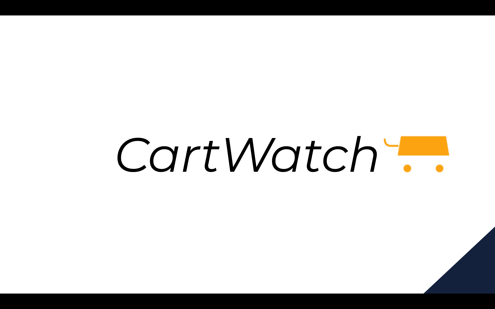
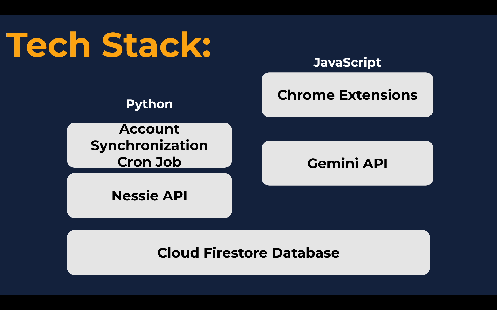
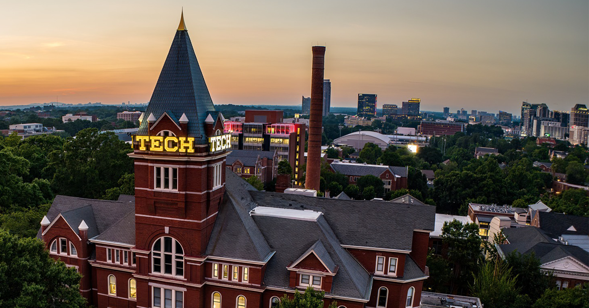
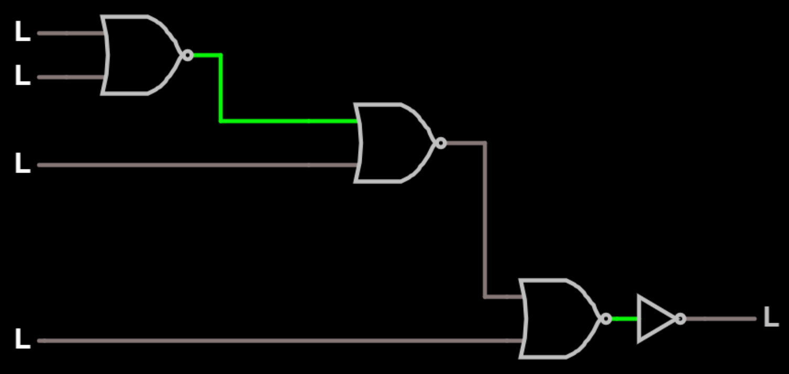

Electrical & Computer Engineering · Georgia Tech
Welcome to my ePortfolio. I am a first-year Electrical and Computer Engineering student at Georgia Tech with a passion for software development, machine learning, computer architecture, and anything related to solving real-world problems through abstract technology theory. This site showcases my academic journey, technical projects, and career goals as I grow into the engineer I aspire to be. I invite you to explore my work and connect with me.
"Truth is ever to be found in the simplicity, and not in the multiplicity and confusion of things." — Isaac Newton
My name is Toby Godat, and I am a first-year student in the Electrical and Computer Engineering program at the Georgia Institute of Technology. I grew up in St. Louis, Missouri, where an early fascination with physics and computers set me on the path toward computer engineering. From tinkering with electrical wiring to developing my own computer games, I have always been driven by curiosity and the desire to understand how things work at a fundamental level. I attended Saint Louis University High School, where I set myself apart through my relentless curiosity and academic excellence within the STEM curriculum, for which I was awarded the Lonigro Distinguished Senior in Science Award. Now, at Georgia Tech, I hope to continue my pursuit of excellence within the Electrical and Computer Engineering department.
Below is my current resume. You can view it directly or download a PDF copy. This document is updated regularly as I gain new experiences and skills.
⇓ Download Resume (PDF)2026
Build a Strong Academic & Technical Foundation
My immediate priority is maintaining a 4.0 GPA while building the mathematical and programming foundations that machine learning demands — linear algebra, multivariable calculus, data structures, and systems programming. Alongside coursework, I plan to get involved in Trading@GT and BDBI to start applying quantitative thinking in real, competitive environments alongside like-minded peers.
2027
Break Into ML Research & Land a Top Internship
By my sophomore year I aim to secure either an undergraduate research position in a Georgia Tech ML lab or a software/ML engineering internship at a competitive company. The goal is to get hands-on experience training models, working with real datasets, and shipping code in a professional environment — the kind of experience that separates candidates at top-tier firms and labs.
2028
Graduate with a Competitive ML Portfolio
By December 2028 graduation, I want a portfolio that speaks for itself: multiple internships at recognizable companies, meaningful research contributions, and personal ML projects that demonstrate genuine depth — not just coursework. The target is a full-time offer at a top AI startup or a research engineering role at a frontier ML lab like OpenAI, DeepMind, or Anthropic.
2028 – 2031
Join a Top ML Lab or High-Growth AI Startup
The dream first role is a research engineering or ML engineering position at an organization doing frontier work — think OpenAI, Anthropic, DeepMind, or a well-funded startup building something genuinely new. I want to be in a room with the smartest people working on the hardest problems, shipping models that matter, and learning at a pace that only the best environments can offer. No grad school — I plan to learn by doing.
2031 – 2035
Become a Senior Research Scientist or Principal Engineer
Within a few years of entering industry, I aim to reach a senior individual contributor level — either as a Research Scientist driving model development and publishing impactful work, or as a Principal/Staff Engineer architecting the systems that make large-scale ML possible. At this stage I want to be someone others come to when the problem is unsolved.
2035+
Chief Engineer, Research Lead, or Founder
Long-term, I see myself in one of three roles: Chief Engineer at a major AI company shaping technical direction at scale, Head of Research at a lab pushing the state of the art, or co-founder of my own startup applying ML to an industry I care about. Whatever the path, the goal is to be building things that didn't exist before — and leading the team doing it.
Overview:
Approach & Methods:
Results & Outcomes:
My Contributions:
Relevance to Future Employers:

Built at Georgia Tech's HackGT hackathon, CartWatch is a Chrome extension and Python backend designed to tackle the personal savings crisis. The app monitors online shopping behavior, flags impulsive purchases, and nudges users toward smarter spending habits using real-time account data and AI-powered feedback via the Gemini API.


B.S. in Electrical & Computer Engineering
Georgia Institute of Technology — Atlanta, GA
Expected Graduation: December 2028 | GPA: 4.00 / 4.00
Threads: Systems & Architecture & Distributed Systems & Software Development
Honors / Awards: Faculty Hours
Relevant Coursework
Lab Work Sample — ECE 2020: Digital System Design

Programming & Software
Communication
Leadership & Teamwork
I am always open to connecting with recruiters, fellow engineers, and anyone passionate about technology. Feel free to reach out via any of the channels below.